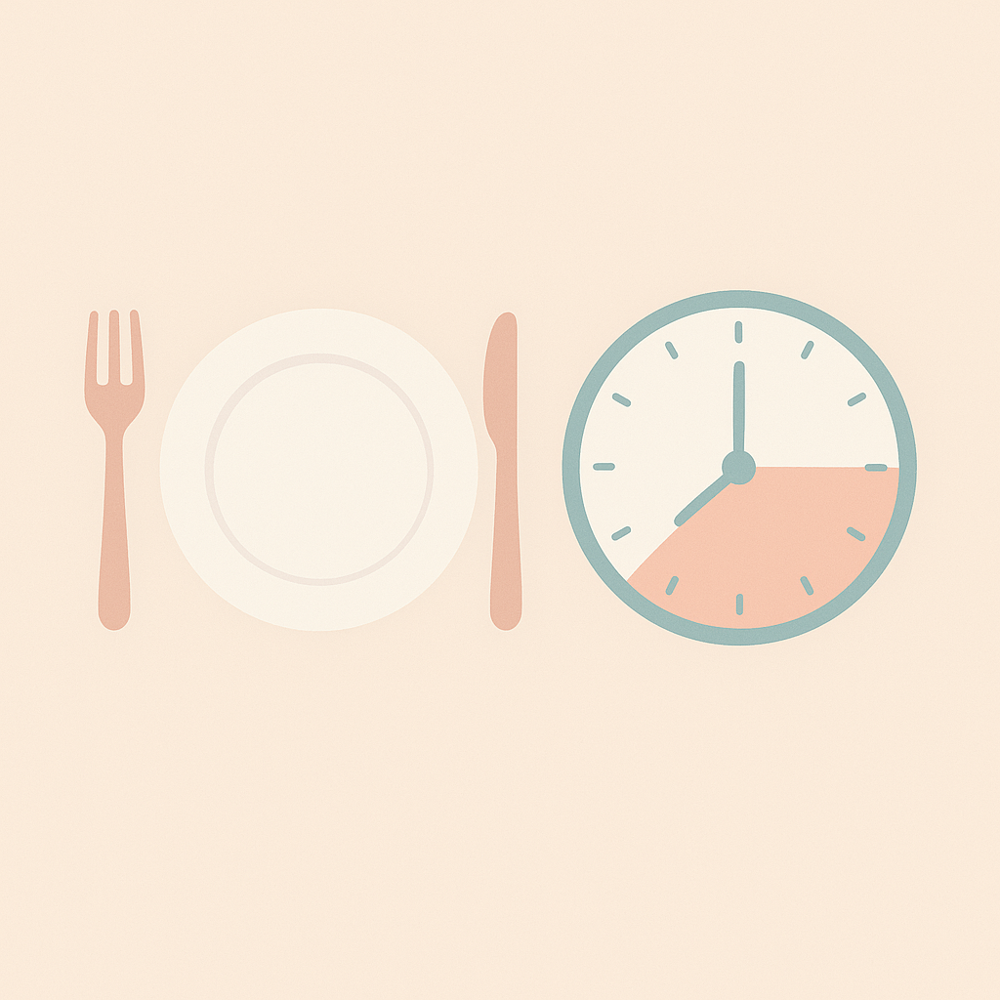
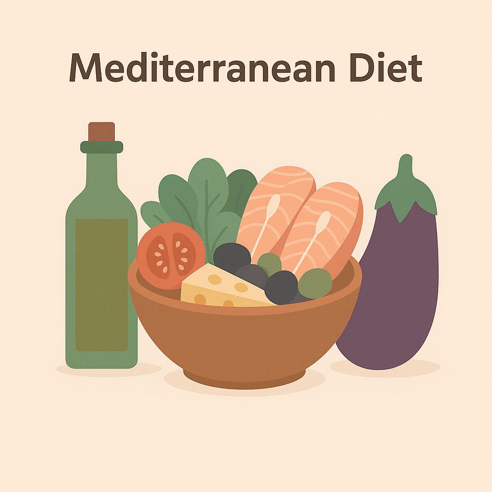
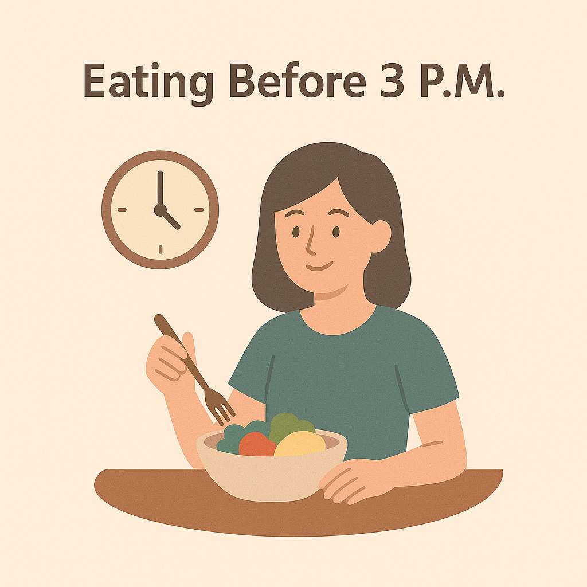
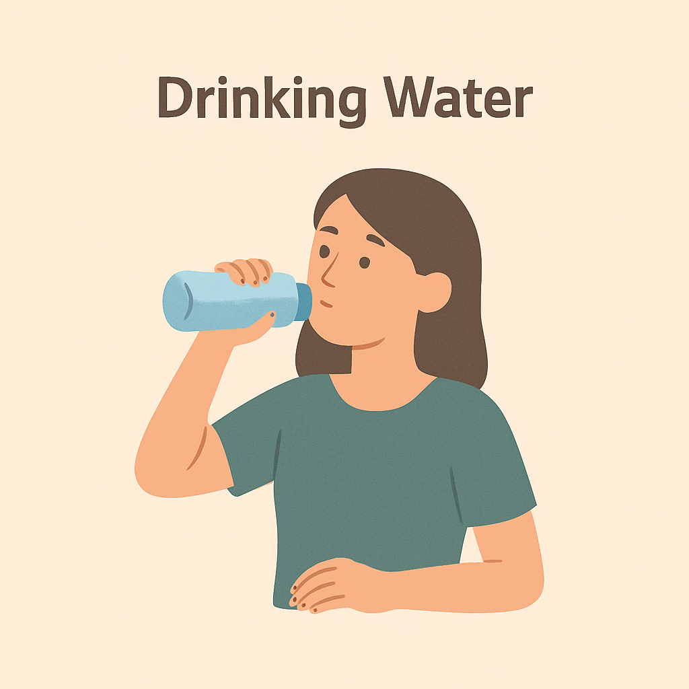
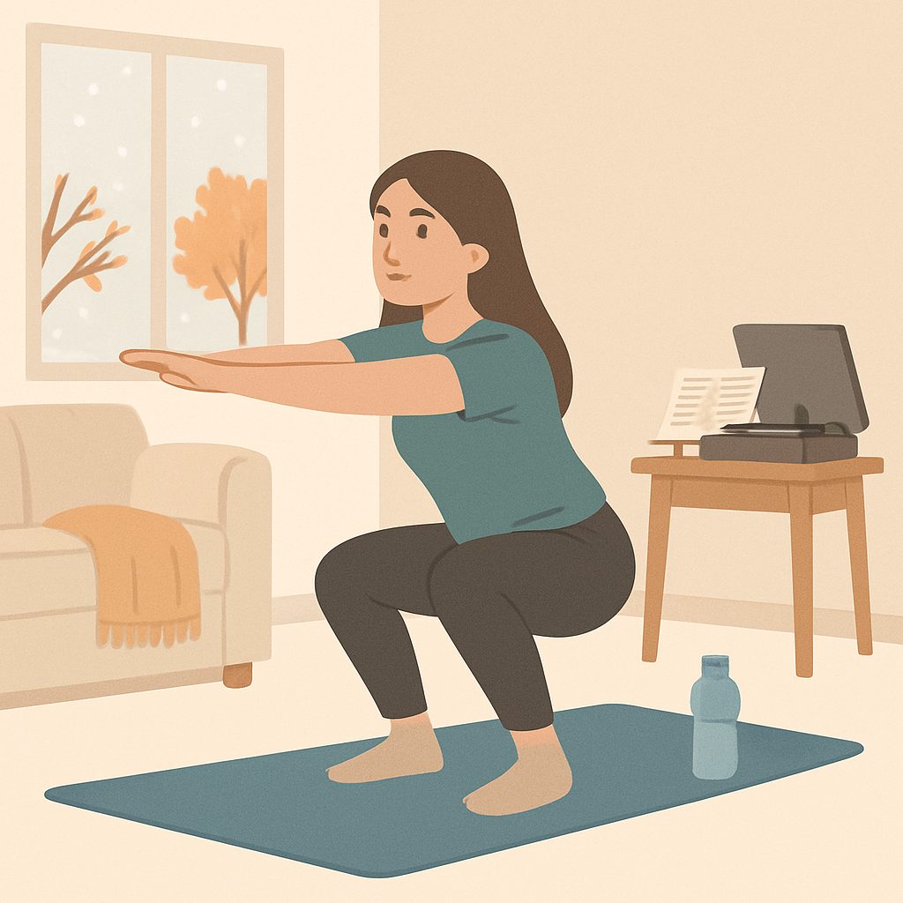

🍽️ Intermittent Fasting
🍽️ การอดอาหารเป็นช่วงเวลา
The 16:8 method is the most popular IF format: fast for 16 hours, eat during 8. Benefits include reduced insulin levels, increased growth hormone, and better fat burning. IF is best combined with healthy, whole food intake.
รูปแบบ IF ที่นิยมที่สุดคือ 16:8 คืออดอาหาร 16 ชั่วโมง กินในช่วง 8 ชั่วโมง เช่น กิน 12.00-20.00 น. งานวิจัยพบว่าช่วยลดน้ำตาลในเลือด เพิ่มฮอร์โมนการเจริญเติบโต และเผาผลาญไขมันได้ดีขึ้น
🥗 Mediterranean Diet
🥗 อาหารเมดิเตอร์เรเนียน
Rich in fruits, vegetables, legumes, fish, olive oil, and whole grains. Low in processed foods and sugar. It has been shown to reduce risk of heart disease and help long-term weight control.
เน้นการกินผัก ผลไม้ ธัญพืชเต็มเมล็ด ปลา น้ำมันมะกอก ลดอาหารแปรรูปและน้ำตาล ช่วยลดความเสี่ยงโรคหัวใจ และควบคุมน้ำหนักได้ในระยะยาว
⏰ Best Eating Time
⏰ เวลากินที่ดีที่สุด
Research shows that consuming calories earlier in the day improves metabolism and prevents weight gain. Avoid eating after 8 PM as the body is less active and insulin sensitivity drops.
งานวิจัยแนะนำให้ทานอาหารมื้อหลักในช่วงเช้าและกลางวัน เพื่อประสิทธิภาพการเผาผลาญที่ดี หลีกเลี่ยงการกินหลัง 2 ทุ่มเพราะร่างกายเริ่มพัก และระบบอินซูลินลดลง
💧 Water Intake
💧 การดื่มน้ำ
Drinking water 30 minutes before meals helps reduce appetite and calorie intake. Stay hydrated throughout the day to support metabolism and digestion.
การดื่มน้ำก่อนมื้ออาหารประมาณ 30 นาที ช่วยลดความหิวและการบริโภคแคลอรี่ ดื่มน้ำอย่างสม่ำเสมอช่วยให้ระบบเผาผลาญและการย่อยอาหารทำงานดีขึ้น
🏃♀️ Daily Exercise
🏃♀️ การออกกำลังกายประจำวัน
Regular exercise, such as walking, stretching, or strength training, boosts metabolism, improves mood, and helps manage weight. Aim for at least 30 minutes daily.
การเดิน ยืดกล้ามเนื้อ หรือเล่นเวทเทรนนิ่งวันละ 30 นาที ช่วยเพิ่มการเผาผลาญ ควบคุมน้ำหนัก และเพิ่มอารมณ์ให้ดีขึ้น
